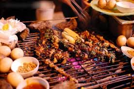

Sapa
Nằm dưới chân dãy Hoàng Liên Sơn hùng vĩ và chỉ cách Hà Nội 5 - 6 giờ di chuyển bằng đường cao tốc, Sa Pa là điểm đến lý tưởng quanh năm. Ngoài những thửa ruộng bậc thang vào mùa lúa chín, Sa Pa còn hút khách nhờ vẻ đẹp của nhiều điểm đến khác.

Lịch sử
Sapa là một thành phố thuộc tỉnh Lào Cai, Việt Nam, nằm ở miền bắc của nước. Khu vực này có lịch sử lâu dài với đồng bào dân tộc thiểu số nổi tiếng như H'Mông, Dao, và Tày. Trước đây, Sapa là một trạm nghỉ của người Pháp trong thời kỳ thực dân.
Văn hóa
Văn hóa ở Sapa rất đa dạng do sự pha trộn của nhiều dân tộc. Du khách có cơ hội tìm hiểu về nền văn hóa truyền thống, từ trang phục truyền thống đến nghệ thuật và thậm chí là văn hóa ẩm thực độc đáo của các dân tộc thiểu số.
- Bạn có thể đặt xe limousine Hà Nội - Sa Pa hoặc xe khách từ bến Mỹ Đình với giá 230.000 - 350.000 đồng một người, tùy hạng ghế. Thời gian di chuyển khoảng 5 - 6 tiếng.
- Nếu đi tàu hỏa chạy, bạn chọn chuyến Hà Nội - Lào Cai, sau khoảng 7 - 9 tiếng di chuyển phải đón tiếp xe bus hoặc bắt taxi lên trung tâm Sa Pa. Giá vé tàu từ 160.000 đến 800.000 đồng tùy hạng ghế và loại tàu.
- Nếu tự lái ôtô, bạn đi cao tốc Nội Bài - Lào Cai. Thời gian chạy xe khoảng 5 - 6 tiếng.
Sa Pa có đủ loại hình lưu trú cho bạn chọn từ nhà nghỉ, homestay ở bản, hostel, khách sạn giá rẻ, cho tới các khách sạn 4-5 sao, resort cao cấp nằm biệt lập.
- Nhà thờ đá Sa Pa
Đây là công trình biểu tượng của phố núi được khởi công năm 1895. Nhà thờ được xây theo hình thập giá mang phong cách Gothic, thể hiện ở mái nhà, tháp chuông, vòm cuốn... đều là hình chóp tạo nên nét bay bổng thanh thoát cho công trình.
Bạn muốn biết thêm thông tin chi tiết về địa điểm vui chơi này? Xem thêm tại đây.
- Bản Cát Cát
+ Bản Cát Cát nằm cách trung tâm Sa Pa 2 km nên bạn có thể chọn trekking hoặc xe máy. Đây là một bản làng người Mông yên bình, còn bảo tồn nhiều phong tục và các nghề thủ công truyền thống như dệt vải, chạm trổ bạc, chế tác trang sức...
+ Con đường đến bản khá đẹp, bạn sẽ đi qua những đoạn đường cua tay áo uốn lượn, hai bên là các thửa ruộng bậc thang lấp ló các mái nhà dân tộc. Đi qua cây cầu Si là tới trung tâm bản Cát Cát, nơi hội tụ của ba dòng suối: suối Tiên Sa, suối Vàng và suối Bạc.
Bạn muốn biết thêm thông tin chi tiết về địa điểm vui chơi này? Xem thêm tại đây.
- Đỉnh Fansipan
Fansipan là đỉnh núi cao nhất Việt Nam, được mệnh danh là "Nóc nhà Đông Dương" thuộc dãy núi Hoàng Liên Sơn, cách thị trấn Sa Pa khoảng 9km về phía Tây Nam. Đây là điểm đến lý tưởng, thích hợp cho những người yêu khám phá thiên nhiên, ưa thích sự mạo hiểm và mong muốn chinh phục "nóc nhà" cao chót vót.
Bạn muốn biết thêm thông tin chi tiết về địa điểm vui chơi này? Xem thêm tại đây.
Đến Sa Pa phải ăn đồ nướng, bởi đây là món ăn có mặt khắp nơi và nhiều loại từ các xiên thịt lợn, gà, rau củ cuốn cho tới trứng, ngô, khoai, cơm lam. Giá đồ nướng chỉ từ 20.000 - 100.000 đồng mỗi loại. Ngoài ra, cá hồi, cá tầm nấu lẩu hoặc ăn sống cũng rất được ưa chuộng. Một nồi lẩu giá 300.000 - 600.000 đồng phù hợp cho 3 - 6 người ăn.

Bạn muốn biết thêm thông tin chi tiết về những món ăn này? Xem thêm tại đây.
- Sapa có khí hậu lạnh, đặc biệt là vào mùa đông, nên du khách nên chuẩn bị đầy đủ áo ấm.
- Tháng 9 đến tháng 11 và tháng 3 đến tháng 5 là thời gian lý tưởng để ghé thăm Sapa vì thời tiết mát mẻ và cảnh đẹp thiên nhiên tươi tốt.
Dưới đây là video mà bạn có thể xem để tham khảo thêm
Du lịch nào sẽ là nơi bạn muốn đến?